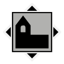

Map
Nearby locations
The 10 closest locations, measured in a straight line between the map markers (1 world unit is 1 metre), with the direction to go from here.
| Location | Kind | Region | Distance | Direction |
|---|---|---|---|---|
 Klockarstugan Klockarstugan | Farm | Farmlands | 239 m | NE |
| Sorken Command Bunker | Bunker | Farmlands | 250 m | SW |
 Ravinen Control Point Ravinen Control Point | Control point | Farmlands | 279 m | E |
 Boo Boo | Settlement | Farmlands | 321 m | W |
 Boobron Boobron | Tourist attraction | Farmlands | 380 m | W |
| Alvas Stenar | Tourist attraction | Farmlands | 456 m | SE |
 Boo Church | Church | Farmlands | 505 m | W |
| Joängen Control Point | Control point | Farmlands | 509 m | N |
 Boo Bruk AB Boo Bruk AB | Industry | Farmlands | 621 m | SW |
| Averholm Manor | Farm | Farmlands | 636 m | NE |
Safehouse
No safehouse here. The nearest one is Sorken Command Bunker (Farmlands), 203 m to the south-west.
Loot
The location's files list 16 loot crate spawn points. These are the crates your save counts for this location's loot progress.
Placed loot within 200 m that is closer to Averholm Orchard than to any other location (from the interactive map's Extra Locations layer).
| Category | Count | Breakdown |
|---|---|---|
| Weapons | 1 | Q4 1 |
| Items | 6 | Emergency flare 4, Adrenaline Shot 1, Simple First Aid Kit 1 |
| Materials | 1 | Steel 1 |
| Crate spots (map layer) | 15 | Bodies 5, Ammo boxes 4, Machine wrecks 4, Equipment boxes 1, Apparel packs 1 |
From the game files
Two crate numbers. The crate spawn points are the loot crate spawn points listed in the location files: what your save tracks for a location's loot progress. The crate spots (map layer) are every crate spot of the interactive map's loot layer within 200 m that is nearer to this location than to any other, whichever game file it comes from, so the two numbers rarely match. Neither means a crate is always there: the game may leave a spot empty.
Weapons, attachments and other single items placed here:
| Item | Quality | Count |
|---|---|---|
| Möller PP (Exceptional) | Exceptional | 1 |
Missions
No mission text mentions Averholm Orchard by name. See the missions of the Farmlands region.
From the game files
Distances are straight lines on the map between marker positions. A location's area in the game is not a circle, so the 300 m and 200 m radii on this page are a practical approximation, not the game's own borders.